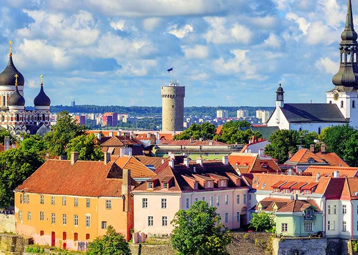
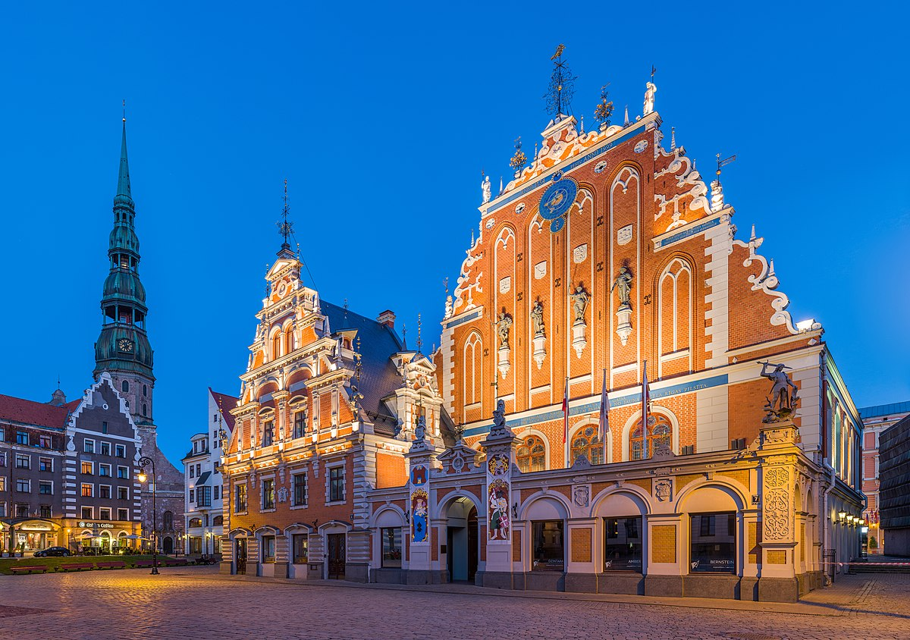
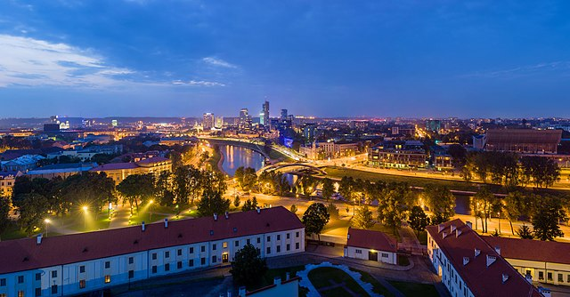
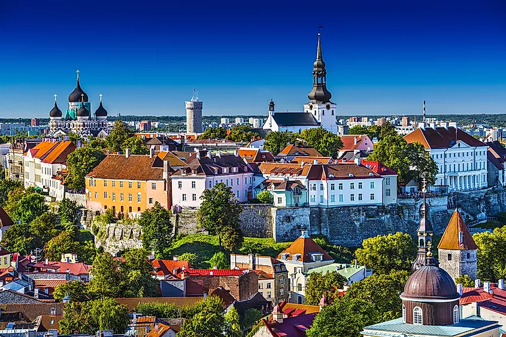

In this article, we have compiled information about 3 baltic cities.
Riga is the capital of Latvia and is home to 671,000 inhabitants which is a third of Latvia's population. Being significantly larger than other cities of Latvia, Riga is the country's primate city. It is also the largest city in the three Baltic states and is home to one tenth of the three Baltic states' combined population. The city lies on the Gulf of Riga at the mouth of the Daugava river where it meets the Baltic Sea. Riga's territory covers 307.17 km2 (118.60 sq mi) and lies 1–10 m (3.3–32.8 ft) above sea level, on a flat and sandy plain.
Click for detailed information about Riga.
Vilnius is the capital and largest city of Lithuania, with a population of 592,389 as of 2022. The population of Vilnius's functional urban area, which stretches beyond the city limits, is estimated at 718,507 (as of 2020), while according to the Vilnius territorial health insurance fund, there were 732,421 permanent inhabitants as of October 2020 in Vilnius city and Vilnius district municipalities combined. Vilnius is situated in southeastern Lithuania and is the second-largest city in the Baltic states, but according to the Bank of Latvia is expected to become the largest in 2025. It is the seat of Lithuania's national government and the Vilnius District Municipality.
Click for detailed information about Vilnius.
Tallinn is the most populous, primate, and capital city of Estonia. Situated on a bay in north Estonia, on the shore of the Gulf of Finland of the Baltic Sea, Tallinn has a population of 437,811 (as of 2022) and administratively lies in the Harju maakond (county). Tallinn is the main financial, industrial, and cultural centre of Estonia. It is located 187 km (116 mi) northwest of the country's second largest city Tartu, however only 80 km (50 mi) south of Helsinki, Finland, also 320 km (200 mi) west of Saint Petersburg, Russia, 300 km (190 mi) north of Riga, Latvia, and 380 km (240 mi) east of Stockholm, Sweden. From the 13th century until the first half of the 20th century, Tallinn was known in most of the world by variants of its other historical name Reval.
Click for detailed information about Tallinn.